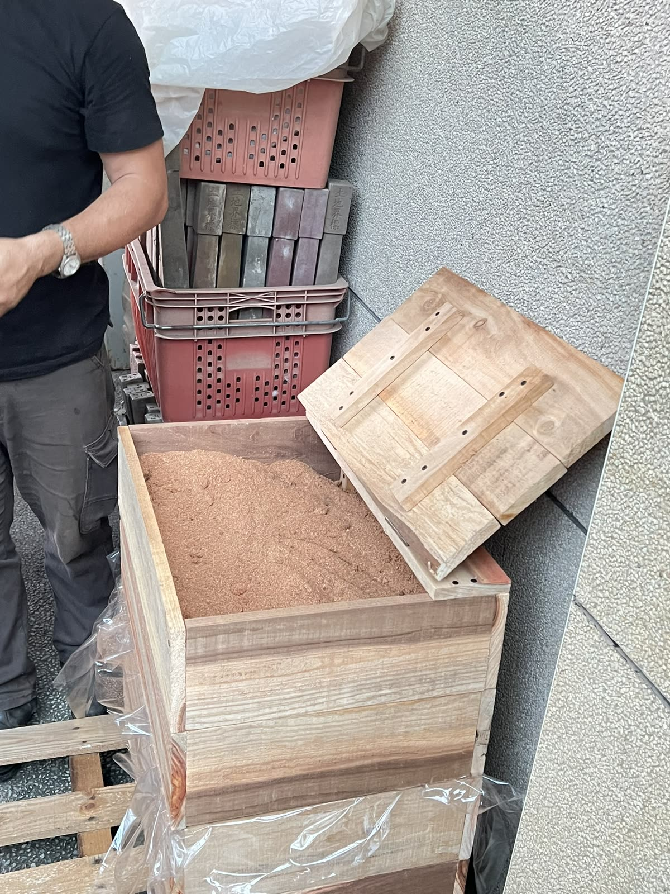

厚層廚餘回收箱（Mulch Composting）
運用「三明治堆肥法」或「蚯蚓塔」設計，將家庭廚餘與園藝落葉無臭轉化為肥沃黑土。
- 零廢棄循環：降低垃圾量，直接原地轉化為養分。
- 防臭設計：透過碳氮比調整與覆蓋層，杜絕異味與蚊蟲。
- 土壤升級：豐富微生物菌群，提升保水與透氣性。
先說結論：樸門設計以照顧地球、照顧人類與分享多餘為基礎，將日常資源轉化為可持續運作的生活系統。
維護所有生命系統繼續生存與繁殖的能力，重建土壤與生態豐富度。
滿足食物、住宅、社群等基本需求，實現自給自足且健康的永續生活。
將多餘的資源（資源、時間、能源）回饋到前兩個目標，促進循環生態。

運用「三明治堆肥法」或「蚯蚓塔」設計，將家庭廚餘與園藝落葉無臭轉化為肥沃黑土。
你可以從這裡開始：依照自身經驗與場域，選擇樸門基礎、居家堆肥或食物森林規劃課程，將知識轉化為具體行動。
學習基礎設計原則、水資源收集與微氣候分析，掌握自給自足第一步。
手把手教你組裝無臭廚餘回收箱，打造陽台食物森林小基地。
學習多層次立體種植，打造低維護成本、高產量的自然生態果園。
能在不破壞土壤微生物結構的前提下鬆土，維護健康土層。
利用屋頂水溝與過濾桶，實現屋頂與花園水資源重覆利用。
直接埋入菜圃中，讓紅蚯蚓協助在根系旁就地分解廚餘並施肥。
重點整理：從零開始也能實踐樸門；先理解原理，再依居家或土地條件選擇合適方法。
適合。樸門 PDC 基礎入門課涵蓋基礎設計原則、水資源收集與微氣候分析，協助初學者建立第一步。
可運用三明治堆肥法或蚯蚓塔，搭配碳氮比調整與覆蓋層，將家庭廚餘及園藝落葉轉化為肥沃黑土。
適合地主與農場管理者，課程著重多層次立體種植、低維護成本及自然生態果園的規劃。
樸門設計影像作品：以純畫面方式呈現，影片會自動播放、靜音並循環播放。